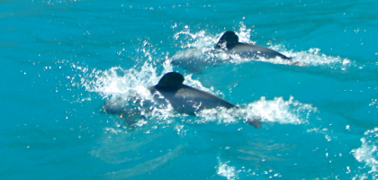
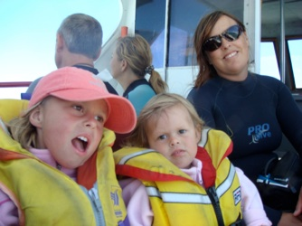

Akaroa

En tanke på Stig Helmer
lørdag den 19. januar 2008

I dag er vi vågnet op til fantastisk vejr, så vi er blevet enige om at blive en ekstra dag. Vi har vasket lidt tøj og Viola har leget og leget med danske børn. Hun er så beskidt, at selv en våd dag i Skovbørnehaven slet ikke kan hamle op med dette. Hun er fuldstændig færdig om aftenen efter leg, 5 kilometers gåtur og mere leg.
Formiddagen er gået med hygge på pladsen. Der skal konstant smøres godt med faktor 30 på, da vi er tæt på Antarktis, og dermed hullet i orzonlaget. Vi har følt det lidt som en sommerdag i sommerhuset i Hornbæk. En god bog, en kop varm kaffe og hygge.
Efter at Stella har sovet, tager vi på eventyr : Vi skal forsøge at finde Hector delfiner. Delfinerne findes kun her ved Akaroa på New Zealand. Det er verdens mindste delfin og der er kun ca. 7.000 af dem tilbage, så de er på listen over truede dyr, da de har det med at blive fanget i de fintmaskede fiskenet. Hector delfinen er ret lille (hannen 1.2 m. og hunnen 1.4 m.), og den har en rund sort finne, som ligner Mickey Mouse øre.

Da vi bestiller turen, er havet helt blikstille, det er det ikke om eftermiddagen! Efter nogen tid møder vi de første delfiner, og vi bliver bedt om at kravle i vandet for at svømme med dem. 12 turister iført Michelin dragter plopper i vandet. Her skal vi så sprede os og sige dyrelyde, der kan tiltrække delfinerne.
Der ligger vi så i høj sø fra alle verdenshjørner og siger “ UHHHHH” “ IVIVIV”, nogen basker med armene, en overvægtig inder går i panik og kommer i havsnød, og delfinerne, ja de har fået sig et billigt grin og er svømmet videre.
Det er mens jeg ligger og kæmper med at få rumpen under vand og puste bobler, at jeg pludselig kommer til at tænke på Stig Helmer og Selskabsrejsen, for hvilken scene ville man ikke kunne skyde her, det er simpelthen for morsomt. Vi får senere set nogle flere svømmende delfiner, der leger omkring båden, men det er det. Selskabet refunderer nogle af vores penge, da vi ikke kom til at svømme med de smukke dyr denne gang.
Sejlturen var smuk, men lidt kold. Pigerne nød det, og så er det jo det hele værd, selv 2 timer i tør våddragt for faderen, der aldrig når i vandet.
Nu er vi ved at pakke til en tidlig afgang mod Mount Cook i morgen. Vi er lidt spændte på temperaturen. Der er meget stor forskel på nat og dag og i nat måtte vi faktisk tænde lidt for varmen, og nu skal vi jo op til sneen.
/Camilla
Et dyrt glimt af en truet delfin. “Mig så Mickey Mouse øre” som Stella har sagt hele aftenen efter turen.
“Mickey Mouse øre ryg fisk”